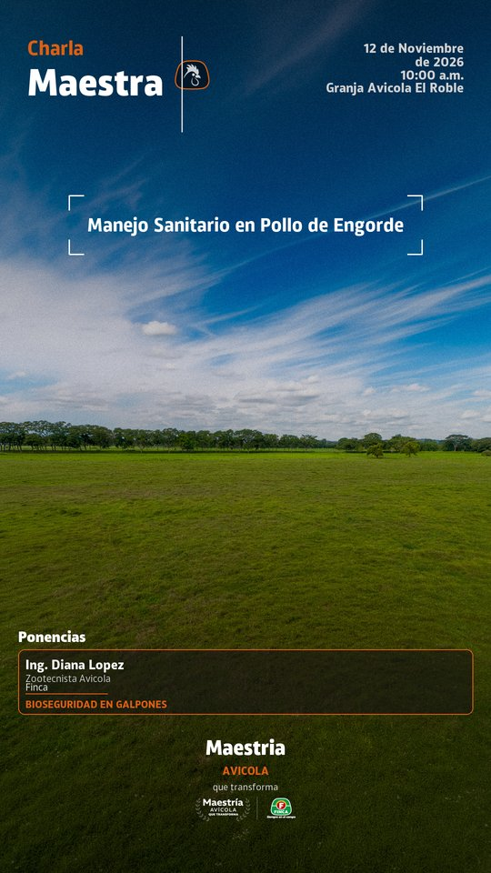
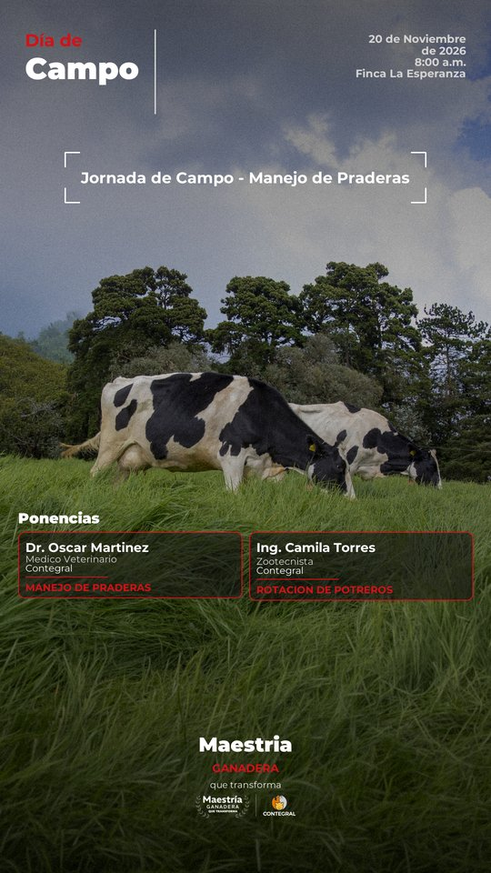
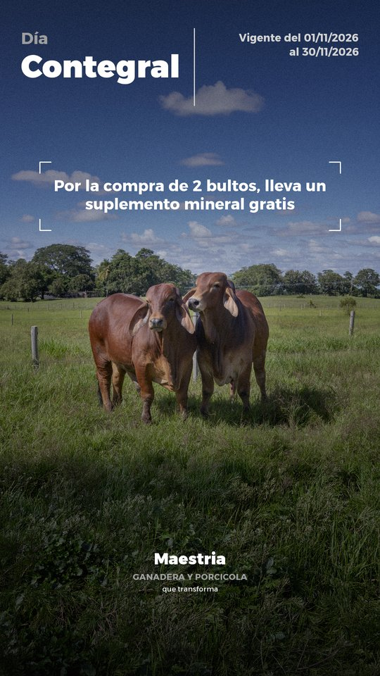
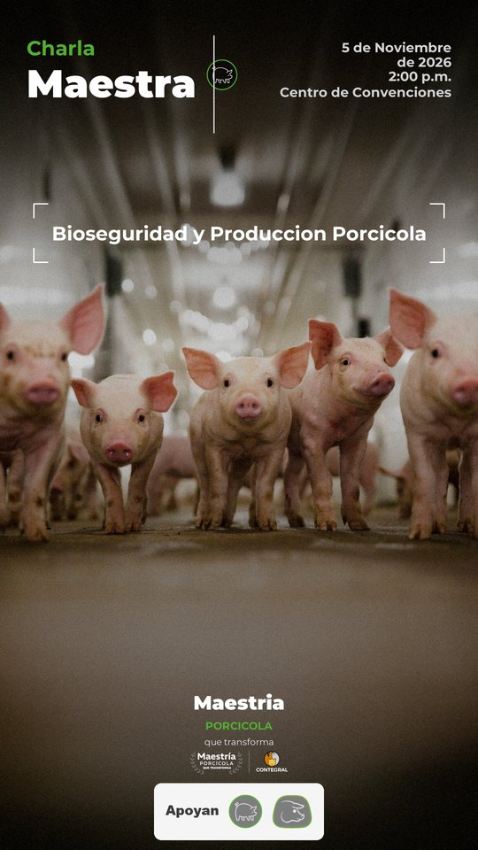

Generador Automatizado de Invitaciones
Motor en Python (Pillow) que arma las invitaciones de Contegral y Finca a partir de un formulario: sin IA generativa, costo cero y con el sistema visual real de las marcas.
ContegralFincaPillowStreamlitEjemplos generados por el motor




Qué hace
- Tres tipos de pieza: Charla Maestra, Día de Campo y Actividad Promocional.
- Tipografía y color por marca y línea de negocio (ganadera, porcícola, avícola, equina, acuícola).
- Generación individual, por lote (CSV/JSON) o desde un webhook de formularios.
Código
Esta página es solo una vista previa estática. La herramienta corre localmente con streamlit run app.py. Código en github.com/samuelramirez-cyber/bios-invitaciones.